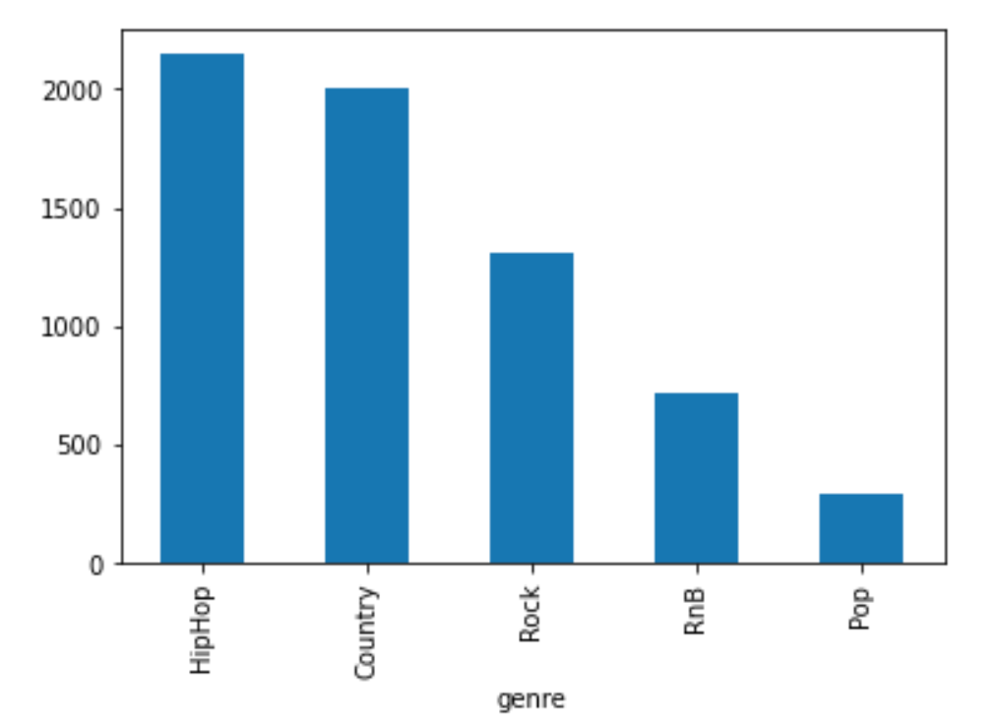

<h2>Network analysis goal</h2>

<p>
 
</p>


<h2>Basic Stats</h2>
<p>
  Top connected artist...
</p>

</p>

{% include figure.html %}

<h2>Communities</h2>

{% include example.html %}

<h2>Degree distribution</h2>


